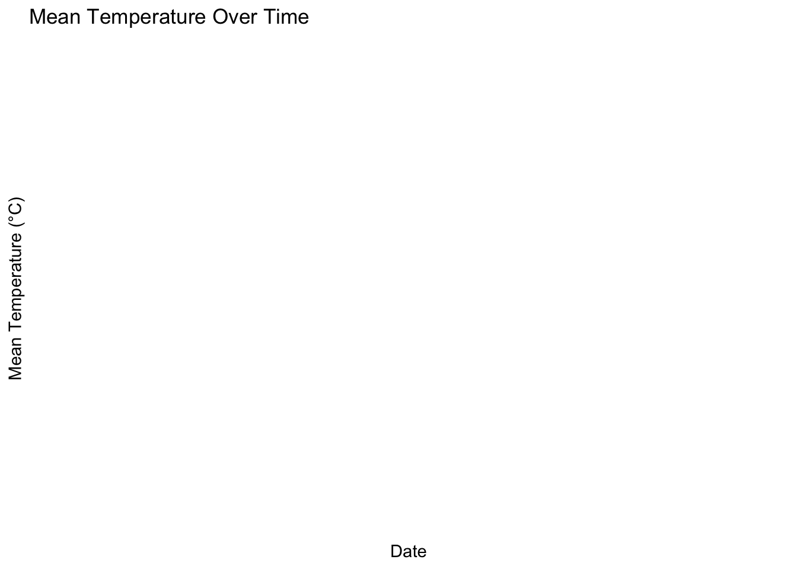
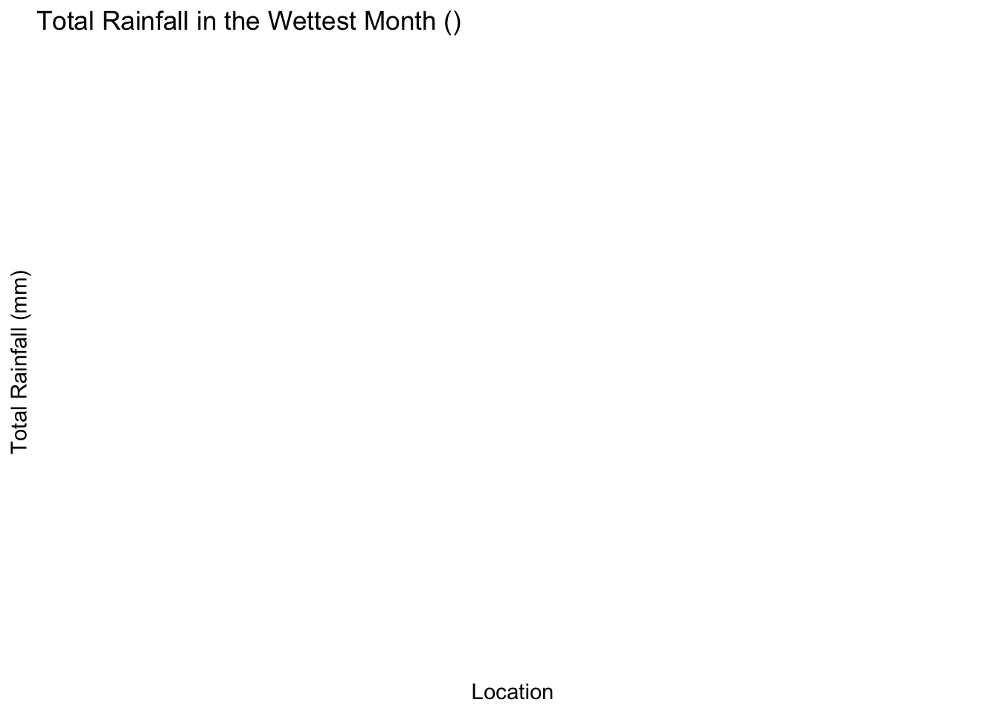

packages <- c("readxl", "ggplot2", "dplyr", "lubridate", "stringr")Testing
Display the summary statistics of the dataset
install_and_load(packages)
Attaching package: 'dplyr'The following objects are masked from 'package:stats':
filter, lagThe following objects are masked from 'package:base':
intersect, setdiff, setequal, union
Attaching package: 'lubridate'The following objects are masked from 'package:base':
date, intersect, setdiff, unionDisplay the summary statistics of the dataset
weather_data <- read_excel("full_year_weather_data.xlsx")Display the first few rows of the dataset
head(weather_data)# A tibble: 6 × 12
Location Month Date `Daily Rainfall Total (mm)` Highest 30-min Rainfall …¹
<chr> <chr> <chr> <chr> <chr>
1 Admiralty January 1 Jan 0.0 0.0
2 Admiralty January 2 Jan 0.0 0.0
3 Admiralty January 3 Jan 0.2 0.2
4 Admiralty January 4 Jan 0.0 0.0
5 Admiralty January 5 Jan 3.4 3.2
6 Admiralty January 6 Jan 0.4 0.2
# ℹ abbreviated name: ¹`Highest 30-min Rainfall (mm)`
# ℹ 7 more variables: `Highest 60-min Rainfall (mm)` <chr>,
# `Highest 120-min Rainfall (mm)` <chr>, `Mean Temperature (°C)` <chr>,
# `Maximum Temperature (°C)` <chr>, `Minimum Temperature (°C)` <chr>,
# `Mean Wind Speed (km/h)` <chr>, `Max Wind Speed (km/h)` <chr># Check the structure of the data to understand the date format
str(weather_data)tibble [17,520 × 12] (S3: tbl_df/tbl/data.frame)
$ Location : chr [1:17520] "Admiralty" "Admiralty" "Admiralty" "Admiralty" ...
$ Month : chr [1:17520] "January" "January" "January" "January" ...
$ Date : chr [1:17520] "1 Jan" "2 Jan" "3 Jan" "4 Jan" ...
$ Daily Rainfall Total (mm) : chr [1:17520] "0.0" "0.0" "0.2" "0.0" ...
$ Highest 30-min Rainfall (mm) : chr [1:17520] "0.0" "0.0" "0.2" "0.0" ...
$ Highest 60-min Rainfall (mm) : chr [1:17520] "0.0" "0.0" "0.2" "0.0" ...
$ Highest 120-min Rainfall (mm): chr [1:17520] "0.0" "0.0" "0.2" "0.0" ...
$ Mean Temperature (°C) : chr [1:17520] "26.8" "27.3" "27.3" "26.5" ...
$ Maximum Temperature (°C) : chr [1:17520] "30.1" "31.5" "31.7" "29.3" ...
$ Minimum Temperature (°C) : chr [1:17520] "24.8" "24.7" "25.0" "24.5" ...
$ Mean Wind Speed (km/h) : chr [1:17520] "10.7" "13.6" "11.2" "13.2" ...
$ Max Wind Speed (km/h) : chr [1:17520] "27.8" "34.3" "35.6" "41.5" ...Convert ‘Date’ column to Date format
weather_data <- weather_data %>%
mutate(
Date = dmy(Date),
`Daily Rainfall Total (mm)` = as.numeric(`Daily Rainfall Total (mm)`),
`Highest 30-min Rainfall (mm)` = as.numeric(`Highest 30-min Rainfall (mm)`),
`Highest 60-min Rainfall (mm)` = as.numeric(`Highest 60-min Rainfall (mm)`),
`Highest 120-min Rainfall (mm)` = as.numeric(`Highest 120-min Rainfall (mm)`),
`Mean Temperature (°C)` = as.numeric(`Mean Temperature (°C)`),
`Maximum Temperature (°C)` = as.numeric(`Maximum Temperature (°C)`),
`Minimum Temperature (°C)` = as.numeric(`Minimum Temperature (°C)`),
`Mean Wind Speed (km/h)` = as.numeric(`Mean Wind Speed (km/h)`),
`Max Wind Speed (km/h)` = as.numeric(`Max Wind Speed (km/h)`)
)Warning: There were 10 warnings in `mutate()`.
The first warning was:
ℹ In argument: `Date = dmy(Date)`.
Caused by warning:
! All formats failed to parse. No formats found.
ℹ Run `dplyr::last_dplyr_warnings()` to see the 9 remaining warnings.# Remove rows with invalid dates
weather_data <- weather_data %>%
filter(!is.na(Date) & !is.na(`Daily Rainfall Total (mm)`) & !is.na(`Mean Temperature (°C)`))Display summary statistics
summary(weather_data) Location Month Date Daily Rainfall Total (mm)
Length:0 Length:0 Min. :NA Min. : NA
Class :character Class :character 1st Qu.:NA 1st Qu.: NA
Mode :character Mode :character Median :NA Median : NA
Mean :NaN Mean :NaN
3rd Qu.:NA 3rd Qu.: NA
Max. :NA Max. : NA
Highest 30-min Rainfall (mm) Highest 60-min Rainfall (mm)
Min. : NA Min. : NA
1st Qu.: NA 1st Qu.: NA
Median : NA Median : NA
Mean :NaN Mean :NaN
3rd Qu.: NA 3rd Qu.: NA
Max. : NA Max. : NA
Highest 120-min Rainfall (mm) Mean Temperature (°C) Maximum Temperature (°C)
Min. : NA Min. : NA Min. : NA
1st Qu.: NA 1st Qu.: NA 1st Qu.: NA
Median : NA Median : NA Median : NA
Mean :NaN Mean :NaN Mean :NaN
3rd Qu.: NA 3rd Qu.: NA 3rd Qu.: NA
Max. : NA Max. : NA Max. : NA
Minimum Temperature (°C) Mean Wind Speed (km/h) Max Wind Speed (km/h)
Min. : NA Min. : NA Min. : NA
1st Qu.: NA 1st Qu.: NA 1st Qu.: NA
Median : NA Median : NA Median : NA
Mean :NaN Mean :NaN Mean :NaN
3rd Qu.: NA 3rd Qu.: NA 3rd Qu.: NA
Max. : NA Max. : NA Max. : NA Time series plot for mean temperature
ggplot(weather_data, aes(x = Date, y = `Mean Temperature (°C)`, color = Location)) +
geom_line() +
labs(title = "Mean Temperature Over Time", x = "Date", y = "Mean Temperature (°C)") +
theme_minimal()
Calculate total rainfall for each month and location
monthly_rainfall <- weather_data %>%
group_by(Location, Month) %>%
summarise(Total_Rainfall = sum(`Daily Rainfall Total (mm)`, na.rm = TRUE))`summarise()` has grouped output by 'Location'. You can override using the
`.groups` argument.Identify the wettest month
wettest_month <- monthly_rainfall %>%
group_by(Month) %>%
summarise(Total_Rainfall = sum(Total_Rainfall, na.rm = TRUE)) %>%
filter(Total_Rainfall == max(Total_Rainfall)) %>%
pull(Month)Warning: There was 1 warning in `filter()`.
ℹ In argument: `Total_Rainfall == max(Total_Rainfall)`.
Caused by warning in `max()`:
! no non-missing arguments to max; returning -InfFilter data for the wettest month
wettest_month_data <- monthly_rainfall %>%
filter(Month == wettest_month)Plot the bar chart
ggplot(wettest_month_data, aes(x = Location, y = Total_Rainfall)) +
geom_bar(stat = "identity") +
labs(title = paste("Total Rainfall in the Wettest Month (", wettest_month, ")", sep = ""),
x = "Location", y = "Total Rainfall (mm)") +
theme_minimal()